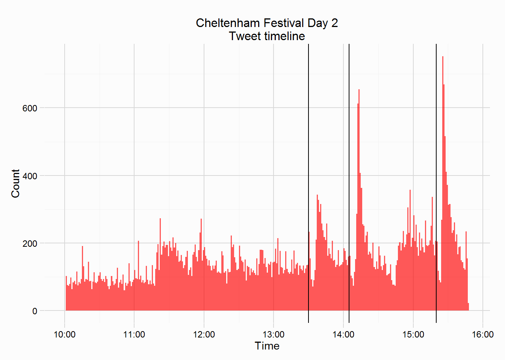

Day Two of the Festival was the quietest day, with only 54981 tweets returned, this was in part due to the collection being prematurely ended, and part because the number of horses that were tracked was the fewest of the four days. Tweets were collected if they mentioned any of the runners in the 3 Grade 1 races run (excluding the Champion Bumper), these horses are shown in the table below:
| Day | Race | Time | Horses | n |
|---|---|---|---|---|
| 2 | Neptune Novices | 13:30 | Anteros, Beast Of Burden, Nichols Canyon, Ordo Ab Chao, Outlander, Parlour Games, Snow Falcon, Vyta Du Roc, Warrantor, Windsor Park | 10 |
| 2 | RSA | 14:05 | Apache Jack, Don Poli, If In Doubt, Kings Palace, Southfield Theatre, The Ould Lad, The Young Master, Wounded Warrior, Adriana Des Mottes | 9 |
| 2 | Champion Chase | 15:20 | Champagne Fever, Clarcam, Dodging Bullets, Mr Mole, Savello, Simply Ned, Sire De Grugy, Sizing Europe, Somersby, Special Tiara, Sprinter Sacre | 11 |
The plot below shows the timeline from the second day, included in the plot are three vertical lines charting the start times of the various races. These races were the Neptune Investment Novices Hurdle (13:30), the RSA Chase (14:05), and the Champion Chase (15:20). Compared to the timeline from Day 1, we see fewer tweets, and the frequency of post race tweets is fewer. The Champion Chase prompted the biggest reaction, with >600 tweets being sent in a minute after the race finished, but this number is dwarfed by the numbers seen on Day 1 after the Champion Hurdle and Mares Hurdle. The timeline also shows that the collection of tweets was ended prematurely, although all three races that were targeted had been run.

The two plots below shows the number of tweets that mention a runner from each Championship race on Day 2, and the most mentioned horses. The most tweeted about race was the Champion Chase, with 18745 tweets, meanwhile the other two Championship races had fewer than 10,000 tweets. To the right is a plot showing the number mentions a runner received.
I’ll only look at a single race from Day Two, the Champion Chase, but if anyone wants to see other races looked at let me know and I’ll try add them.
The Champion Chase favourite (at the off) was Sprinter Sacre at 9/4, with Sire De Grugy second favourite at 5/2, but both had questions hanging over them. Nevertheless Sprinter Sacre was the most mentioned horse from this race, his staggering win in this race two years ago will unlikely to be forgotten any time soon. The plots below shows the number of tweets sent per minute that menioned one of the 11 runners, and the sentiment of those same tweets over 10minute intervals. Naturally the volume of tweets increase as the race is completed, also plotted in the sentiment plot is a loess curve, sentiment doesn’t increase or decrease post race, different to the post race reactions from day one (see here).
There is an interesting sudden rise in the number of tweets around 11:20 in the morning, it appears as though this was due to the news that Champagne Fever was withdrawn from the race.
Also of interest is which horses were popular on twitter, is there any wisdom in the twitter crowd? The plots below show the number of tweets that mention each of the 11 runners, the plot on the left is restricted to those tweets sent before the Champion Chase, the plot to the right is tweets after the race. Sprinter Sacre was the favourite on twitter and was mentioned in 50.9% of tweets that mentioned any runner in the race. Champagne Fever was the second most mentioned pre race. The eventual winner was Dodging Bullets, mentioned in 9.7% of tweets pre race, it’s no surprise that he dominated the post race mentions, being mentioned in 56.4% of tweets. Despite being pulled up, Sprinter Sacre was mentioned in 26.2% of tweets.